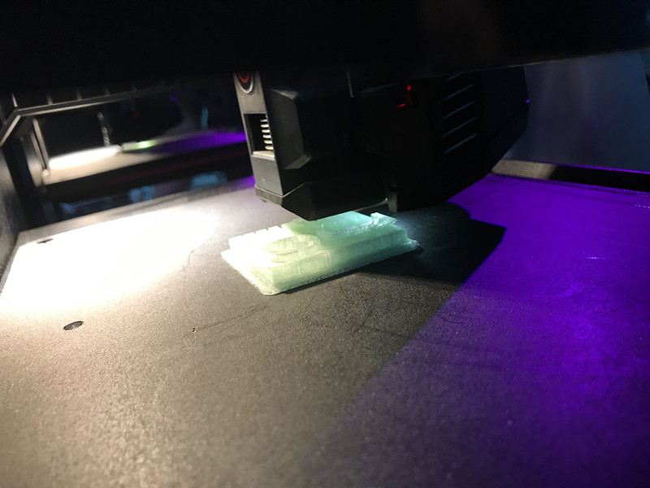
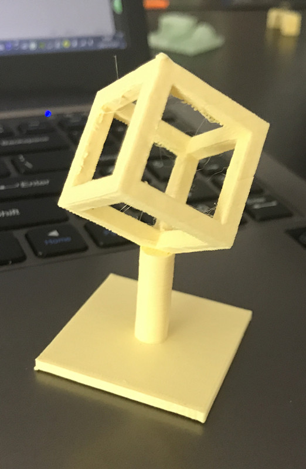

From the top perspective only to using 4 perspective window, we now can make 3D model.(Still using Rhino5)
Before we start printing we have to make a test model to check overhang bridge and accuracy
Time for makerbotReplicator
While working

It came out that the overhang is about 60, accuracy is good but at every tip it expend a little,the bridge can go acroos for over 2cm.
With the data tested I made the first model. Specially we used "support"
The sphere moving joint.
The finally design.

Previous